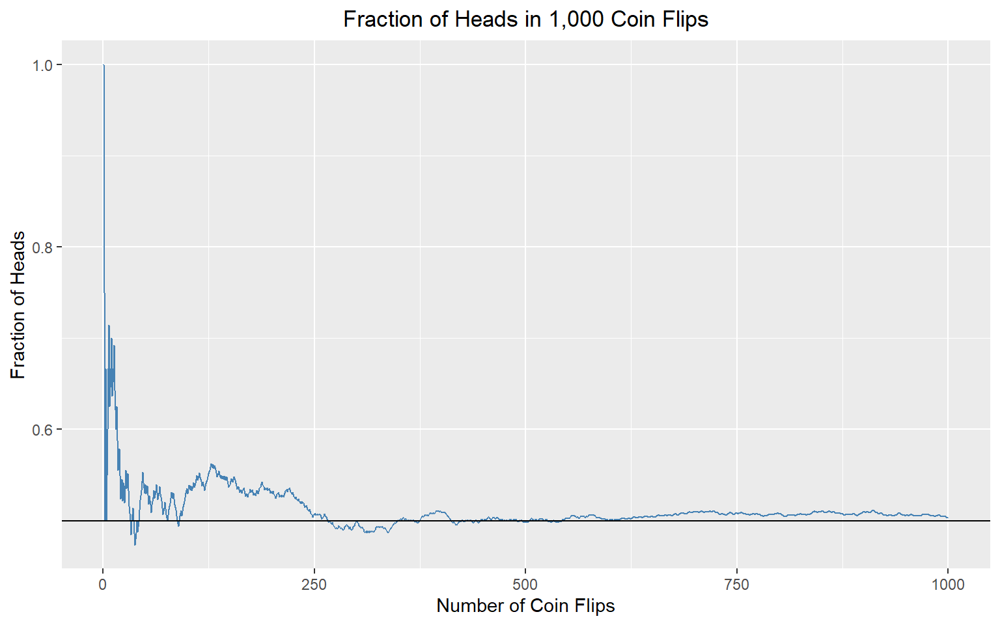
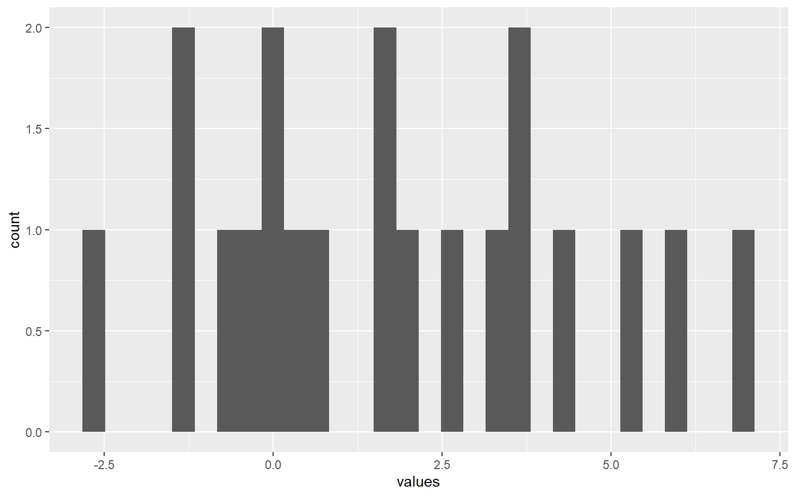
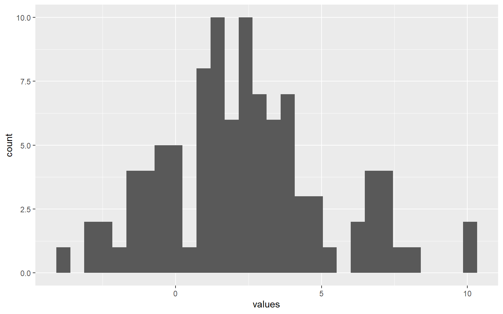
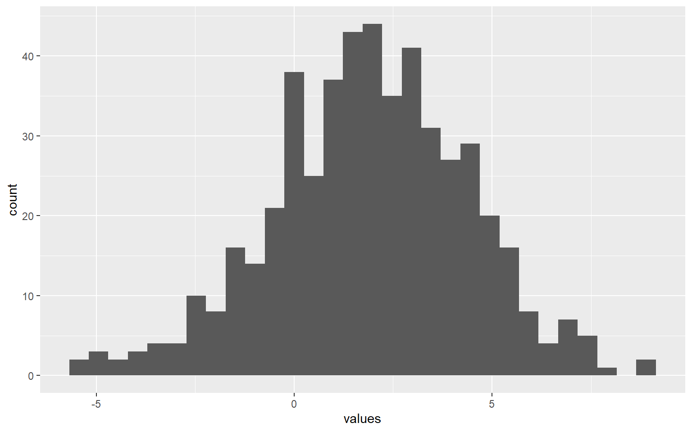
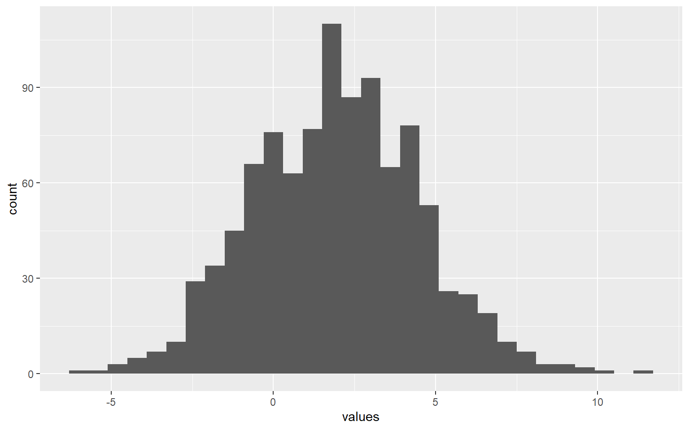
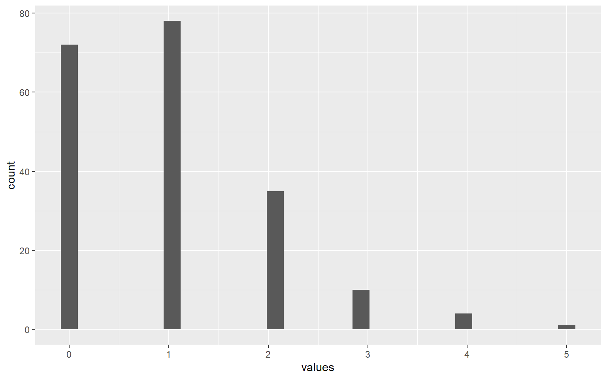
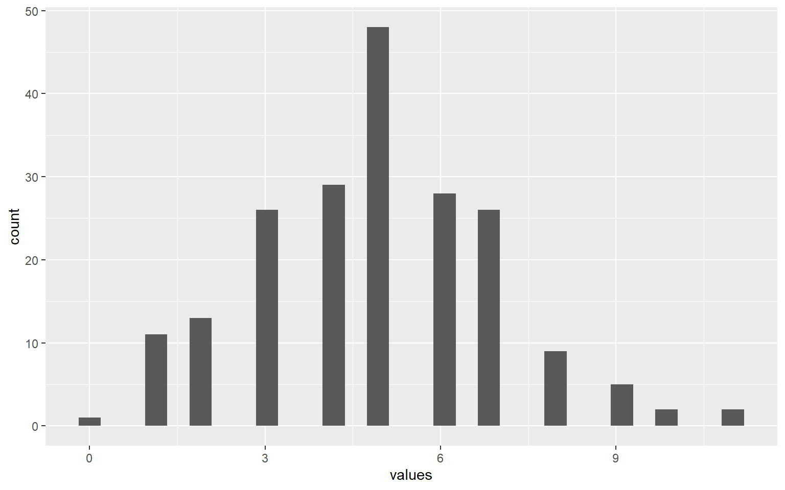
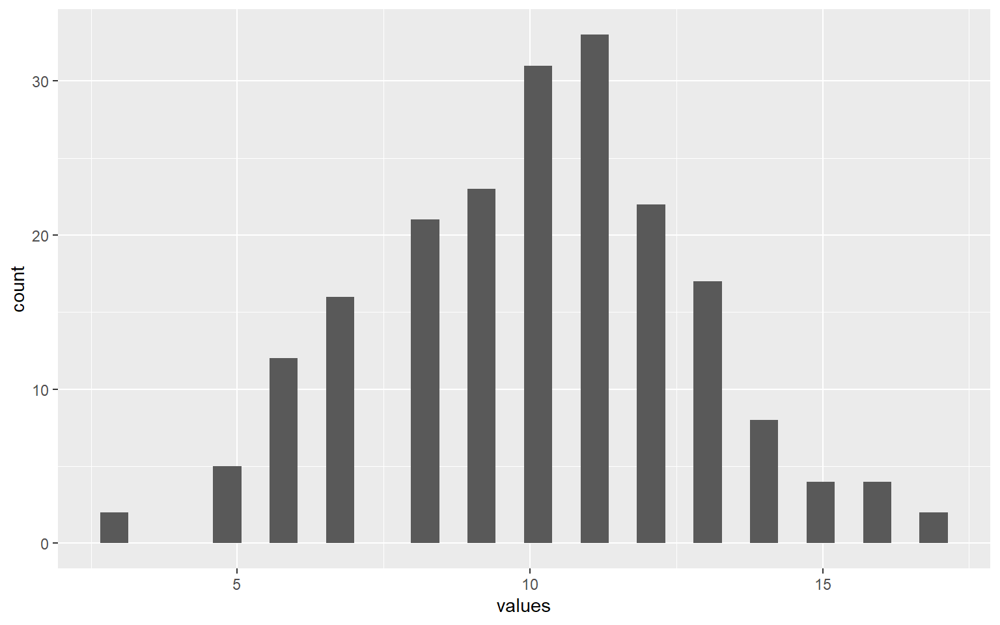
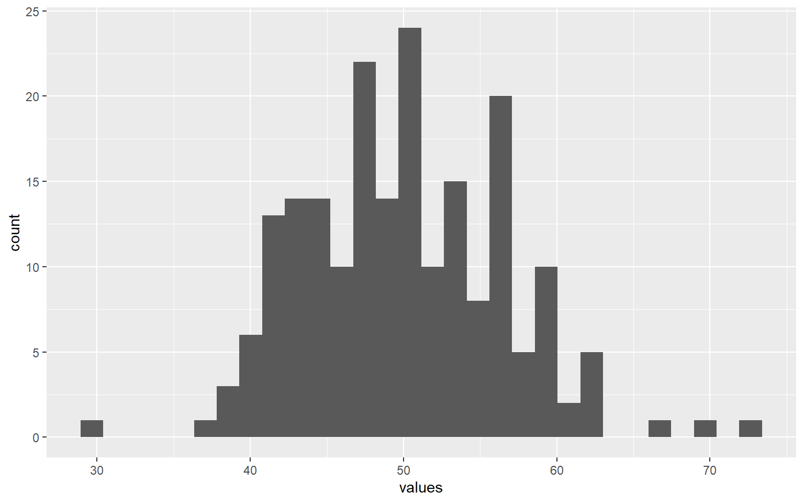
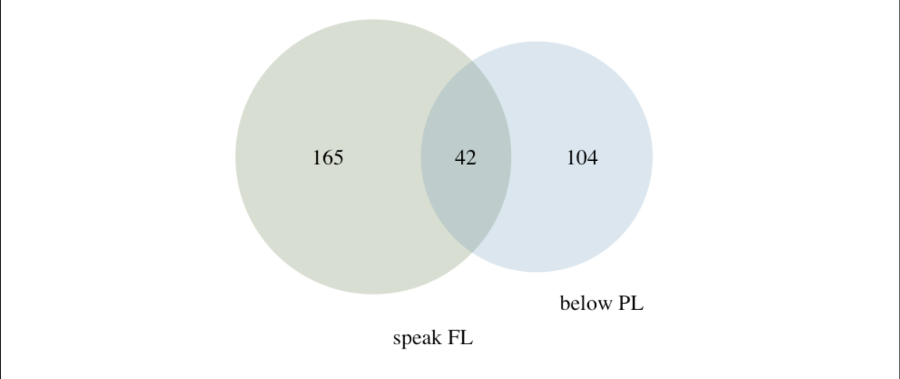

flips coin_outcome cumulative_heads fraction_heads
1 1 TRUE 1 1.0000000
2 2 FALSE 1 0.5000000
3 3 TRUE 2 0.6666667
4 4 FALSE 2 0.5000000
5 5 TRUE 3 0.6000000
6 6 TRUE 4 0.6666667Homework 2 Answers
If you find any typos or errors, please feel free to contact me via email at r13323002@ntu.edu.tw. I would appreciate it and will correct the solution to prevent any misunderstandings.
For some R commands marked with ‘OPTIONAL,’ you don’t need to learn them. You will be completely fine on the computer quiz even if you choose to ignore them.
If you’re having trouble understanding the code, don’t hesitate to ask me for help. I’ll do my best to assist you during office hours or after the TA session.
# clear the mamory and import package
rm(list = ls())
library(tidyverse)
set.seed(2025)1 Computer Exercises
1.1 Bernoulli Simulation
# simulate 1,000 coin flips by denoting head if value above 0.5, tail otherwise
coin_flips <- runif(1000) > 0.5
# calculate cumulative number and fraction of heads for coin flips of 1, 2, 3, ..., 1000
cum_heads <- cumsum(coin_flips)
frac_heads <- cum_heads / 1:1000
# record the result of each flip in dataframe
df <- data.frame(
flips = 1:1000,
coin_outcome = coin_flips,
cumulative_heads = cum_heads,
fraction_heads = frac_heads
)
# take a look at the fitst five records
head(df)# draw the fraction of head over each flip
ggplot(df, aes(x = flips, y = fraction_heads)) +
## draw the fraction of head
geom_line(color = "steelblue") +
## (OPTIONAL) baseline fraction is 0.5
geom_hline(aes(yintercept = 0.5), color = "black") +
## add label to make the graph more readable
labs(
title = "Fraction of Heads in 1,000 Coin Flips",
x = "Number of Coin Flips",
y = "Fraction of Heads"
) +
## center the graph title
theme(plot.title = element_text(hjust = 0.5))
1.2 Normal Simulation
# define distribution parameters
mu <- 2
sigma <- 2.5
# draw the random normal samples according to different sample size
draw_size20 <- rnorm(20, mean = mu, sd = sigma)
draw_size100 <- rnorm(100, mean = mu, sd = sigma)
draw_size500 <- rnorm(500, mean = mu, sd = sigma)
draw_size1000 <- rnorm(1000, mean = mu, sd = sigma)
# compute the simulated mean and standard deviation according to different draw sizes
sim_result <- data.frame(
sample_size = c(20, 100, 500, 1000),
mean = c(mean(draw_size20), mean(draw_size100), mean(draw_size500), mean(draw_size1000)),
sd = c(sd(draw_size20), sd(draw_size100), sd(draw_size500), sd(draw_size1000))
)
print(sim_result) sample_size mean sd
1 20 1.785653 2.632694
2 100 2.363479 2.829786
3 500 1.918210 2.483657
4 1000 1.941324 2.556143# the histogram when draw size = 20
df_size20 <- data.frame(
values = draw_size20
)
ggplot(df_size20, aes(x = values)) +
geom_histogram()
# the histogram when draw size = 100
df_size100 <- data.frame(
values = draw_size100
)
ggplot(df_size100, aes(x = values)) +
geom_histogram()
# the histogram when draw size = 500
df_size500 <- data.frame(
values = draw_size500
)
ggplot(df_size500, aes(x = values)) +
geom_histogram()
1.3
# the histogram when draw size = 1000
df_size1000 <- data.frame(
values = draw_size1000
)
ggplot(df_size1000, aes(x = values)) +
geom_histogram()
1.4 Binomial Simulation
# define distribution parameter and trial size
p <- 0.1
sample_num <- 200
# draw the random binomial samples according to different sample size
draw_size10 <- rbinom(sample_num, size = 10, prob = p)
draw_size50 <- rbinom(sample_num, size = 50, prob = p)
draw_size100 <- rbinom(sample_num, size = 100, prob = p)
draw_size500 <- rbinom(sample_num, size = 500, prob = p)
# compute the simulated mean and standard deviation according to different draw sizes
sim_result <- data.frame(
sample_size = c(10, 50, 100, 500),
mean = c(mean(draw_size10), mean(draw_size50), mean(draw_size100), mean(draw_size500)),
sd = c(sd(draw_size10), sd(draw_size50), sd(draw_size100), sd(draw_size500))
)
print(sim_result) sample_size mean sd
1 10 0.995 0.9999874
2 50 4.900 2.0836767
3 100 10.090 2.6603170
4 500 50.025 6.5696405# the histogram when draw size = 10
df_size10 <- data.frame(
values = draw_size10
)
ggplot(df_size10, aes(x = values)) +
geom_histogram()
# the histogram when draw size = 50
df_size50 <- data.frame(
values = draw_size50
)
ggplot(df_size50, aes(x = values)) +
geom_histogram()
# the histogram when draw size = 100
df_size100 <- data.frame(
values = draw_size100
)
ggplot(df_size100, aes(x = values)) +
geom_histogram()
# the histogram when draw size = 500
df_size500 <- data.frame(
values = draw_size500
)
ggplot(df_size500, aes(x = values)) +
geom_histogram()
2 Textbook Exercise
2.1 Question 3.8
We denote Poverty Line as PL, and Foreign Language as FL.
No, there are people who are both living below the poverty line and speak a language other than English at home.
The Venn diagram is shown below.

Each person living below the poverty line either speaks only English at home or doesn’t.
Since 14.6% of Americans live below the poverty line and 4.2% speak a language other than English at home, the other 10.4% only speak English at home.Using the General Addition Rule:
\[ \begin{aligned} P(\text{below PL or speak FL}) &= P(\text{below PL}) + P(\text{FL}) - P(\text{both}) \\ &= 0.146 + 0.207 - 0.042 \\ &= 0.311. \end{aligned} \]
- Probability of neither below PL nor speak FL:
\[ P(\text{neither below PL nor speak FL}) = 1 - P(\text{below PL or speak FL}) = 1 - 0.311 = 0.689. \]
- Two approaches to assess independence:
- Multiplication rule (if independent)
\[ P(\text{below PL}) \times P(\text{FL}) = 0.146 \times 0.207 = 0.030. \]
This does not equal ( P() = 0.042 ), therefore the events are dependent.
- Bayes’ theorem
If the two events were independent, then ( P() = P() ).
Using Bayes’ theorem:
\[ P(\text{below PL} \mid \text{FL}) = \frac{P(\text{below PL and FL})}{P(\text{FL})} = \frac{0.042}{0.207} \approx 0.203. \]
Since this probability (()) is different from ( P() = 0.146 ), we determine that the two events are dependent.
2.2 Question 3.16
No, there are individuals who are both in excellent health and have health coverage.
Overall probability: \[ P(\text{excellent health}) = 0.2329 \]
Conditional on having health coverage: \[ P(\text{excellent health}\mid \text{coverage}) = \frac{0.2099}{0.8738} \approx 0.24 \]
Conditional on not having health coverage: \[ P(\text{excellent health}\mid \text{no coverage}) = \frac{0.0230}{0.1262} \approx 0.18 \]
Conclusion: Since the probability of excellent health differs between coverage groups (24% vs 18%), the variables are not independent.
2.3 Question 3.34
- The probability model and the calculation of average revenue per passenger (expected value)
| Event | \(X\) | (P(X)) | (XP(X)) | ((X - E\[X\])^2) | ((X - E\[X\])^2P(X)) |
|---|---|---|---|---|---|
| No baggage | 0 | 0.54 | 0.0 | 246.49 | 133.10 |
| 1 checked bag | 25 | 0.34 | 8.5 | 86.49 | 29.41 |
| 2 checked bags | 60 | 0.12 | 7.2 | 1962.49 | 235.50 |
- Expected value: \[(E(X) = 15.70)\]
- Variance: \[(V(X) = 398.01)\]
- Standard deviation: \[(SD(X) = 19.95)\]
- Assume independence between individual fliers (a rough but helpful approximation).
2.4 Question 3.44
- \(E(X + Y_1 + Y_2 + Y_3) = E(X) + 3 \times E(Y) = 48 + 3 \times 2 = 54\)
- \(V(X + Y_1 + Y_2 + Y_3) = V(X) + 3 \times V(Y) = 1 + 3 \times 0.0625 = 1.1875\)
- \(SD(X + Y_1 + Y_2 + Y_3) = \sqrt{1.1875} = 1.09\)
- \(E(X - Y) = E(X) - E(Y) = 48 - 2 = 46\)
- \(V(X - Y) = V(X) + V(Y) = 1 + 0.0625 = 1.0625\)
- \(SD(X - Y) = \sqrt{1.0625} = 1.03\)
- Initially we do not know exactly how much ice cream is in the box. Then we scoop out an unknown amount. We should now be even more unsure about the amount of ice cream that is left in the box.
2.5 Question 4.4
- Problem setup
Let \(X\) denote the finishing times of Men (ages 30–34) and \(Y\) denote the finishing times of Women (ages 25–29):
\[ X \sim N(\mu = 4313, \sigma = 583) \] \[ Y \sim N(\mu = 5261, \sigma = 807) \]
- Z-scores
The Z-scores can be calculated as follows:
\[ Z_{Leo} = \frac{4948 - 4313}{583} = 1.09 \] \[ Z_{Mary} = \frac{5513 - 5261}{807} = 0.31 \]
- Leo finished 1.09 standard deviations above the mean of his group.
- Mary finished 0.31 standard deviations above the mean of hers.
- Comparison
Mary ranked better since her Z-score indicates a relatively shorter finishing time compared to her group.
- Probability for Leo
\[ P(Z > 1.09) = 1 - P(Z < 1.09) = 1 - 0.8621 = 0.1379 \]
So, 13.79% of men in Leo’s age group performed worse.
- Probability for Mary
\[ P(Z > 0.31) = 1 - P(Z < 0.31) = 1 - 0.6217 = 0.3783 \]
So, 37.83% of women in Mary’s age group performed worse.
- Normal model consideration
- The answer to part (b) would not change since Z-scores can be calculated for non-normal distributions.
- However, parts (c) through (e) rely on the normal model and cannot be answered without it.
2.6 Question 4.6
- Fastest 5%
The fastest 5% are in the 5th percentile of the distribution.
The Z-score corresponding to the 5th percentile of a normal distribution is approximately \(-1.65\):
\[ Z = -1.65 = \frac{x - 4313}{583} \]
\[ x = -1.65 \times 583 + 4313 = 3351 \text{ seconds} \]
The fastest 5% of males in this age group finished in less than 56 minutes.
- Slowest 10%
The slowest 10% are in the 90th percentile of the distribution.
The Z-score corresponding to the 90th percentile is approximately \(1.28\):
\[ Z = 1.28 = \frac{y - 5261}{807} \]
\[ y = 1.28 \times 807 + 5261 = 6294 \text{ seconds} \]
The slowest 10% of females in this age group took 1 hour, 45 minutes, or longer to finish.
2.7 Question 4.24
Let \(X \sim \text{Binomial}(n=3, p=0.25)\) and for part (d) let \(X \sim \text{Geometric}(p=0.25)\) (counting the trial of the first success).
- \(P(X=2)\) with Binomial
\[ P(X=2) = \binom{3}{2}(0.25)^2(0.75)^1 = 0.1406 \]
- \(P(X=0)\) with Binomial
\[ P(X=0) = \binom{3}{0}(0.25)^0(0.75)^3 = 0.4219 \]
- \(P(X \ge 1)\) with Binomial
\[ P(X \ge 1) = 1 - P(X=0) = 1 - 0.4219 = 0.5781 \]
- First success on trial 3 (Geometric)
\[ P(X=3) = (1-p)^{3-1}p = (0.75)^2(0.25) = 0.1406 \]
2.8 Question 4.28
- Negative Binomial Distribution
Using the negative binomial distribution with \(n = 15\) and \(p = 0.65\):
\[ P(X = 10) = \binom{14}{9}(0.65)^{10}(0.35)^{5} = 0.1416 \]
- Binomial Distribution
Using the binomial distribution:
\[ P(X = 10) = \binom{15}{10}(0.65)^{10}(0.35)^{5} = 0.2123 \]
- Geometric Distribution
Using the geometric distribution:
\[ P(X = 3) = (0.35)^{2}(0.65) = 0.0796 \]